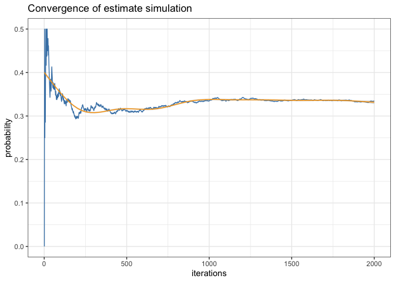
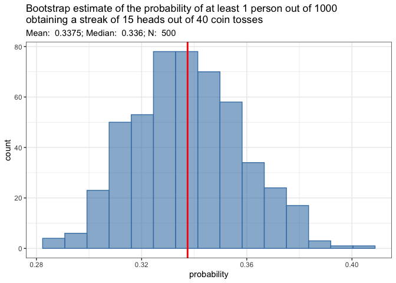

Author: Matthew Hoff
License: MIT

Why you should care about this package
This package provides functions & documentation for solving “The Bill Miller Problem” presented within the book entitled The Drunkard’s Walk: How Randomness Rules Our Lives, written by theoretical physicist & mathematician Leonard Mlodinow. More generally, the functions herein can be used to solve for, either analytically or by simulation, the likelihood of obtaining a winning streak of given length within a given number of attempts, attempted by a specified number of individuals.
Installation
This package can be installed directly from GitHub via the remotes package.
remotes::install_github("mghoff/billmillr")The Premise
The premise of this story goes that Bill Miller (financier) was received as an amazing stock picker after having performed incredibly well over 15 consecutive years - beating the S&P500 stock index year after year. As a result, he was celebrated and acclaimed by the likes of Forbes and others, who estimated and published that the likelihood of his ability to perform this well being random chance was 1 in 32,768, or ~0.0032%, which is roughly true if one considers only the individual, Bill Miller, picking stocks. In other words, they claimed his winning streak is very likely not driven by random chance, but by his knowledge and intuition of the market allowing him to skillfully pick winning stocks at will.
However, what Dr. Mlodinow understood and illustrated in his book is that there are/were many hedge fund managers all picking stocks. Based on this fact, he poses the following refinement to the above estimation: “Out of 1000 stock pickers (coin tossers), what are the odds that at least 1 of them beats the market over 15 consecutive years?” The answer to that question is roughly 3% - far greater than the original estimate of 0.0032%.
Dr. Mlodinow then further refines this calculation by considering the scenario of beating the market 15 years consecutively or longer over a 40 year period; i.e. over 40 years and with 1000 traders, what is the probability that at least 1 trader will obtain a winning streak of at least 15 years with the odds of winning in a given year equal to 0.5 (a fair coin toss). Based on this further refinement, Dr. Mlodinow claims the odds are roughly 3 out of 4, or 75%; however, he provides no proof or evidence of this claim.
Based on the functions within this package, both analytically and by numerical simulation, one can calculate these odds within a high degree of accuracy, and as such, it is found that the odds of this last refined scenario is ~33%, rather than Dr. Mlodinow’s claimed 75%.
The Math
Part 1:
One must compute the odds of getting a run (Streak) of at least k heads out of N coin tosses where p (q = 1-p) is the probability of obtaining heads (tails) from the toss of a coin.
Mathematically,
S[N, K] = p^k + _{j=1, K} \{ p^{(j-1)} (1-p) S[N-j, K] \}
which can be broken down recursively into the sum of terms:
S[n, k] = p^k + … = _{j=1, k} \{ p^{(j-1)} (1-p) S[n-j, k] \} 1 j k
which is provided by odds_of_streak().
For more information on the math behind this recursive odds calculation, see this Ask A Mathematician post.
Part 2:
To calculate the likelihood that at least k out of M people will obtain a streak of at least j heads out of N coin tosses, one must perform the following:
- Calculate the PDF:
(M = k) = {M k}p{k}(1-p){(M-k)}
Again, this is provided by odds_of_streak().
- Then, calculate the CDF:
(X x) = _{i=0,x} {i x}
- And, finally, calculate the final result:
(X > x) = 1 - (X x) 1 - (2)
which is provided by prob_of_at_least_k().
Examples
Example 1: Mathematical Proof
Load Package…
In the context of the Bill Miller problem, we calculate the probability of obtaining a winning streak of at least 15 heads out of 40 coin tosses given that the probability p (q) of heads (tails) is fair, i.e. p = q = 0.5.
tictoc::tic()
pS <- odds_of_streak(num_coins = 40, min_heads = 15, prob_heads = 0.5)
pS
#> [1] 0.000411981018260121
tictoc::toc(func.toc = msg.toc)
#> 16.474 hours elapsed
sessionInfo()
#> R version 4.1.2 (2021-11-01)
#> Platform: aarch64-apple-darwin20 (64-bit)
#> Running under: macOS Monterey 12.3.1
#> Matrix products: default
#> LAPACK: /Library/Frameworks/R.framework/Versions/4.1-arm64/Resources/lib/libRlapack.dylib
#> locale:
#> [1] en_US.UTF-8/en_US.UTF-8/en_US.UTF-8/C/en_US.UTF-8/en_US.UTF-8
#> attached base packages:
#> [1] stats graphics grDevices utils datasets methods base
#> other attached packages:
#> [1] billmillr_0.2.5
#> loaded via a namespace (and not attached):
#> [1] compiler_4.1.2 tictoc_1.0.1 tools_4.1.2 Using pS, we can now calculate the probability that at least 1 out of 1000 people will obtain such a winning streak.
pK <- prob_of_at_least_k(N = 1000, K = 1, p = pS)
pK
#> [1] 0.3377194Example 2: Simulation
Simulate and return resulting data
set.seed(1203)
tictoc::tic()
sim_data <- run_simulation(
iters = 2000,
trials = 1000, # Number of traders
sample_space = c("H", "T"),
sample_size = 40, # Number of years
run_value = "H",
run_length = 15 # Number of consecutive winning years
)
tictoc::toc()
#> 38.893 sec elapsed
sim_data[2000, 3:4]
#> prob_of_zero prob_of_ge_one
#> 2000 0.666 0.334Plot convergence of simulation results 
And finally, run a small bootstrap sampling of the simulation…
# Number of times to run the simulation
bsn <- 500
# Build an empty matrix of proper dimensions to capture results
bs_sim_mtx <- matrix(
data = 0, nrow = bsn, ncol = 2,
dimnames = list(c(), c("prob_of_zero", "prob_of_ge_one"))
)
# Time and run bootstrap sampling of the above simulation
tictoc::tic()
for (bsi in 1:bsn) {
dat <- run_simulation(
iters = 2000,
trials = 1000, # Number of traders
sample_space = c("H", "T"),
sample_size = 40, # Number of years
run_value = "H",
run_length = 15 # Number of consecutive winning years
)
# Take the last row from simulation data above as i-th entry into matrix
bs_sim_mtx[bsi, ] <- as.matrix(dat[bsn, 3:4])
}
tictoc::toc(func.toc = msg.toc)
#> 5.178 hours elapsed
colMeans(bs_sim_mtx)
#> prob_of_zero prob_of_ge_one
#> 0.66252 0.33748